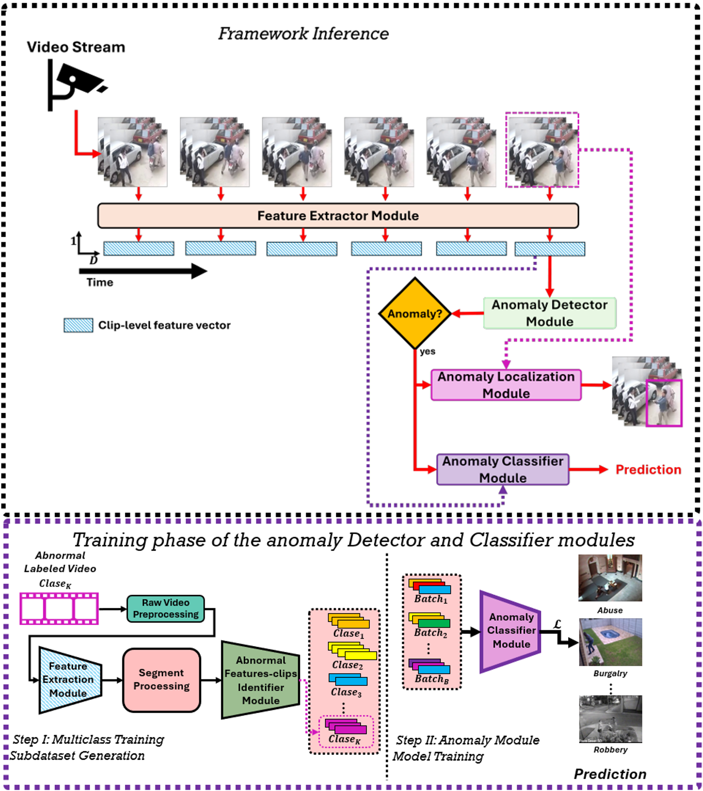
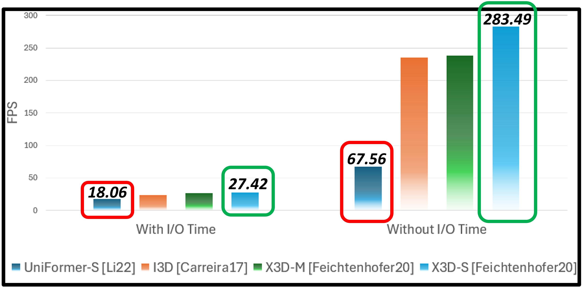

My research asks a practical question: can a camera tell us, in real time, when something abnormal happens, where it happens and what it is — on hardware small enough to live inside a bus or a station? Each paper below answers part of it.
How the work has evolved
Every step adds one capability while keeping the system online and efficient enough for the edge.
-
2024 · IOS Press
Choosing the right backbone
- 79.74% AUC
- 4.64 clips/s on Jetson
-
2025 · Applied Sciences (MDPI)
From detection to classification
- 74.77% clip-level accuracy
- 58.96% video-level accuracy
-
2025 · IEEE
Running on the edge
- 80.0% AUC
- 283.49 FPS on Jetson Orin NX
-
2026 · Engineering Proceedings (MDPI)
TransLowNet: when, what and where
- 80.0% AUC · 54.5% accuracy
- 20.3% mAP@0.5 localization
-
Under review
Learning from noisy labels
Deep dive: TransLowNet
One stream, three answers

Built for constrained hardware

GA-VAD: when, where and what — in a single online pass
Where
What
Scientific publications
Peer-reviewed work in Computer Vision, anomaly detection and intelligent systems.
Trans-IPN: anomalies in public transportation
426videos
4anomaly classes
6.9 GBof video
Videos per class